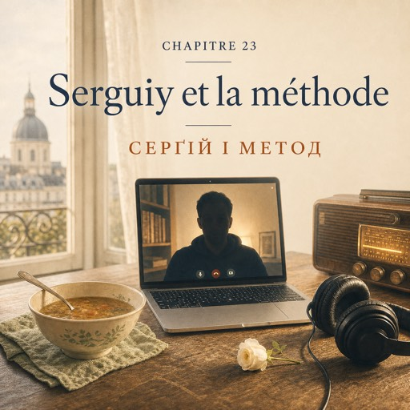

Le dimanche 26 octobre — неділя, 26 жовтня
Le dimanche, le magasin ferme à deux heures.
У неділю магазин зачиняється о другій.
À huit heures du soir, Natalia est chez elle, à Montreuil.
О восьмій вечора Наталя вдома, у Монтреї.
Une soupe chauffe sur le feu.
На плиті гріється суп.
Dans la cour, le platane est déjà noir : cette nuit, on a changé l'heure.
У дворі платан уже чорний: цієї ночі перевели годинники.
L'écran s'allume. Serguiy est assis dans le noir, une seule lampe derrière lui.
Екран засвічується. Серґій сидить у темряві, за спиною одна лампа.
— Salut. Ça va ?
— Привіт. Як ти?
Deux mots, et elle sait. En douze ans, ce « ça va »-là n'a jamais voulu dire oui.
Два слова — і вона вже знає. За дванадцять років це «нормально» жодного разу не означало «так».
— Vraiment ?
— А насправді?
— J'sais pas. Le travail, ça va. La ville, ça va.
— Та хтозна. Робота — нормально. Місто — нормально.
Mais ici, y'a personne à qui parler longtemps.
Але тут нема з ким поговорити довго.
On dit bonjour, on parle du travail, et c'est tout.
Привіталися, поговорили про роботу — і все.
Quatrième année sur les valises, Nathalie.
Четвертий рік на валізах, Наталі.
Je pose mes affaires quelque part et je ne les range jamais.
Я кладу свої речі десь — і ніколи їх не розкладаю.
Natalia connaît ce moment : le laisser parler deux minutes, puis tourner la conversation.
Наталя знає цей момент: дати йому виговоритися хвилини дві, а потім повернути розмову.
— Lundi, j'ai répondu au téléphone.
— У понеділок я підняла телефон.
Serguiy lève la tête.
Серґій підводить голову.
— Au téléphone ? En français ?
— Телефон? Французькою?
— Une commande avec livraison. J'ai demandé trois fois de répéter.
— Замовлення з доставкою. Я тричі попросила повторити.
Le nom, l'adresse, le code. J'ai tout écrit.
Прізвище, адресу, код. Усе записала.
— Et tu as compris ?
— І зрозуміла?
— À la troisième fois, oui.
— З третього разу — так.
— C'est exactement ça, comprendre.
— Оце воно і є — розуміти.
— Et mercredi, une petite fille est venue toute seule. Huit ans.
— А в середу прийшла сама маленька дівчинка. Вісім років.
Trois euros dans la main, pour sa maîtresse.
Три євро в кулаці, для своєї вчительки.
— Elle a eu quoi, pour trois euros ?
— І що вона за три євро отримала?
— La plus belle rose du magasin.
— Найкращу троянду в магазині.
Pour la première fois, il sourit.
Уперше за розмову він усміхається.
— Voilà. C'est comme ça qu'on apprend une langue.
— Отак. Саме так і вчать мову.
— Au téléphone ?
— По телефону?
— Partout. Tu écoutes du français toute la journée, tu lis, tu recommences.
— Скрізь. Ти цілий день слухаєш французьку, читаєш, починаєш спочатку.
Les mots reviennent tout seuls.
Слова повертаються самі.
— Et les règles ?
— А правила?
— Les règles viennent après.
— Правила приходять потім.
Natalia pense au tableau de madame Forestier. Elle aime bien le tableau.
Наталя згадує дошку мадам Форестьє. Дошка їй подобається.
Mais elle sait ce qui reste dans sa tête le soir : la voix de Solange, les questions de Karim, un monsieur de Manchester qui rit trop fort.
Але вона добре знає, що лишається в її голові ввечері: голос Соланж, питання Каріма, чоловік із Манчестера, який регоче на весь магазин.
— Et il faut aimer ça, dit Serguiy. Si on s'ennuie, ça ne rentre pas.
— І це має подобатися, — каже Серґій. — Якщо нудно, воно не заходить.
— Toi, tu parles combien de langues ?
— А ти скількома мовами говориш?
— Quatre. Et personne à qui parler.
— Чотирма. І нема з ким говорити.
Natalia ne répond pas tout de suite.
Наталя не відповідає одразу.
Il y a des choses qu'on ne répare pas par téléphone.
Є речі, яких по телефону не полагодиш.
— Alors il te faut une copine française.
— Тоді тобі потрібна дівчина-француженка.
— Ça va, merci.
— Дякую, обійдусь.
— Une Polonaise, si tu préfères. Mais quelqu'un.
— Полька, якщо хочеш. Але хтось.
Il rit. Enfin.
Він сміється. Нарешті.
Elle reste un moment avec le téléphone dans la main.
Вона ще трохи сидить із телефоном у руці.
La soupe est froide.
Суп холодний.
Il est huit heures et demie. Dehors, on dirait minuit.
Пів на дев'яту. А за вікном наче північ.
Demain, c'est lundi : le rideau de fer, les seaux, l'eau froide.
Завтра понеділок: ролета, відра, холодна вода.
Elle n'a pas envie de dormir. Elle met les écouteurs et laisse la radio parler toute seule.
Спати не хочеться. Вона вдягає навушники й дає радіо говорити саме собі.
Elle ne comprend pas tout.
Вона розуміє не все.
Ce n'est pas grave.
Нічого страшного.